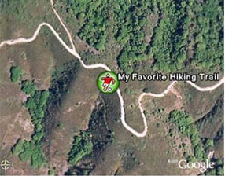
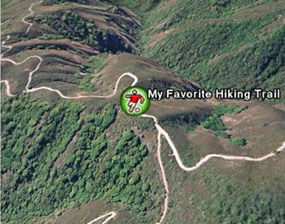
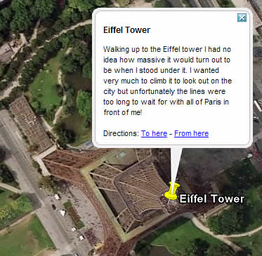
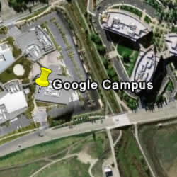

Editing Places and Folders
Once you have become familiar with the basic steps involved in creating and organizing
places and folders, you can use this section to learn how you can further modify the
appearance of places and folders that you have saved. You can edit the style settings,
position, and view for an individual placemark or a folder that contains place data.
To do this, right-click (CTRL click on the Mac) on the icon or folder in the
Places panel and select Properties from the pop-up menu. The
Edit dialog box for that item appears. Enable the relevant Style,
Location, and View properties for the folder or placemark.
Note - Elements in the Style tab dynamically update to reflect the type
of place data being selected.
To learn about these features and how they apply to folders and individual items, see the
following topics:
Repositioning Placemarks
When editing placemarks or geometry, you might want to reposition their location on the
earth. The Edit Placemark dialog box offers a number of ways to reposition a placemark.
Dragging the Placemark
When you edit a placemark, a yellow square appears around the icon, indicating that you
can reposition the icon if you desire. Just click within the square and drag the icon to
the new location. If you need to move the earth to get a better view of the icon relative
to other things, position the mouse outside the square to move the 3D viewer.
You can also lock the placemark to the center of the view.
Locking a Placemark to the Center of the View
With this feature, you reposition the earth under the placemark, rather than
repositioning the placemark over the earth. This feature is useful if you want to move a
placemark a distance that extends beyond the view, and using drag and drop is
inconvenient as you switch from dragging the icon to repositioning the earth.
Click on the View tab and select the Center in View check box. When you
choose this option, the placemark moves to the center of the 3D viewer and cannot be
repositioned by dragging. Instead, you position the icon by dragging the earth,
which then moves independently of the placemark. This feature allows you to easily
position an icon to a new location beyond your current screen space.
Entering Advanced Coordinates
Tip - You can change how Google
Earth displays coodinates in the 3D viewer.
If you know the latitude and longitude for the placemark you are editing, click the View
tab and enter coordinates to reposition the geographic point for the placemark. The
placemark adjusts its position to the new values.
Latitude and Longitude values can be set using the following notations:
-
Decimal Degrees (DDD) - In this notation, decimal precision is set in
the degree coordinate. For example, 49.11675953666N.
-
Degrees, Minutes, and Seconds (DMS) - In this notation, decimal
precision is set in the seconds coordinate. For example, 49 7'20.06"N.
-
Degrees, Minutes with Decimal Seconds (DMM) - In this notation,
decimal precision is set in the minutes coordinate. For example, 49
7.0055722"N. (Here, 20.06 seconds above is divided by 3600 to get the decimal minute
value for 20.06 seconds.)
Latitude and Longitude syntax is specified as follows:
-
Numeric Values - Simply separate each coordinate notation with a white
space and the entry will be recognized correctly. For example, you can indicate a DMS
notation as: 37 24 23.3. You could indicate a DMM notation as 49 7.0055722.
You can also use the single quote mark (') for minutes and the double quote mark (")
for seconds, as follows: 49 7'20.06"
Alternatively, you can use the Character Map utility in Windows to copy the degree
symbol and paste it into the Latitude/Longitude input boxes. To do this, select Start -
All Programs - Accessories - System Tools, and then click Character Map. The degree
symbol with Arial font is the second entry past the registration symbol. Click on the
symbol, click the Copy button and paste it into the input box.
On the Mac, open TextEdit. Press Shift + Option +8. The degree symbol appears. Copy and
paste this into the input box.
-
Direction Notation (North/South, East/West)
Use N, S, E, or W to indicate direction. The letter
can be entered either upper or lower case and it can be placed before or after the
coordinate value. For example:
N 37 24 23.3 is the same as 37 24 23.3 N
You can also use the minus sign (-) to indicate a westerly or southerly position. When
you use this kind of notation, do not specify a letter symbol. Additionally, you do not
need to use a plus sign (+) to indicate northerly/easterly directions. So, for example
this is a valid entry:
37 25 19.07, -122 05 08.40
The following is NOT a valid entry:
37 25 19.07 N, -122 05 08.40
-
Entering Latitude, Longitude Pairs
When entering latitudinal or longitudinal pairs, the first coordinate is interpreted as
latitude unless you use a direction letter to clarify (E or W). For example, you can
enter longitude first as:
122 05 08.40 W 37 25 19.07 N
However, you cannot use the minus sign to enter longitude first:
-122 05 08.40 37 25 19.07
You can separate pair entries with a space, a comma, or a slash:
37.7 N 122.2 W
37.7 N,122.2 W
37.7 N/122.2 W
Tip - When entering advanced coordinates, the location for your
placemark will adjust as soon as your cursor exits the input box, but the view will
remain the same. Your placemark will seem to disappear from view. To see the placemark in
the 3D viewer, click the View tab and click the Reset to default view
button. Your 3D viewer will now be positioned over the placemark in its new location.
Setting the View
When you create a new placemark, the view for that placemark (i.e., how it is seen in the
3D viewer) is automatically set to the current view on creation. However, you can change
the view for any placemark and save it so that each visit to the placemark shows the
saved view. This involves specifying a particular orientation around a given place and
then setting the orientation.
For example, after first viewing a particular place, you might subsequently find a
position that you like to view it from, such as at a specific tilt angle and from a
southerly direction. Rather than the default north-south, overhead viewpoint of a
location, you can specify your preferred position as the view for every time you visit.

|

Top-down, north up view
|
|

Tilted and rotated view
|
Setting a view for a folder serves a different purpose than for an individual item.
Applying a New View
First, position the 3D viewer at the viewing orientation you desire and then choose one
of the following options:
-
Right-click (CTRL click on the Mac) on the item in the list view or
the 3D view and select Snapshot View from the pop-up menu.
The current view inside the Google Earth client 3D viewer is then set as the view for
the selected placemark or folder. You can examine the actual settings for the view by
editing the placemark or folder and clicking on the View.
-
Edit the placemark or folder - Right-click (CTRL click on the Mac) on
the folder or icon and select Properties from the pop-up menu. Click on the
View tab in the Edit... dialog box. The current values for the view are
displayed. When you are ready to set the view (you can still position the view at this
point), click on the Snapshot current view button.
Alternatively, you can manually enter the settings if you have them. Click the
OK button to see the changes in the 3D viewer.
Note - When you change the values for a view, the 3D viewer changes
only the view for the selected item, not the position of the placemark (or
folder) itself. Conceivably, you could even set the view for a placemark so that the
placemark icon is not visible in the 3D viewer.
Returning to the Default, Top-Down View
Right-click (CTRL click on the Mac) on the folder or icon and select Edit...
from the pop-up menu. Click on the View tab in the Edit... dialog box. Click the
Reset view. The view updates to the default orientation for the selected item.
Writing Descriptions
The description field for places and folder can contain a lengthy amount of text,
sufficient for detailed descriptions. When you click on a placemark icon in the 3D
viewer, the description for that place appears in the information balloon that pops up. A
scroll bar appears when the description is too long to fit in the entire balloon.

In the Places panel, a small amount, or snippet, of the description appears
beneath the folder or item.

Keep in mind the following points about text in the Description field:
-
Valid web URLs are automatically converted to HTML and can be clicked
on from the info balloon to produce the related web page in the web window.
-
Many HTML tags are respected, such as font, style, and table tags. If
you are familiar with HTML, you can be quite creative in how your descriptions are
formatted! All HTML tags should be properly closed.
-
You can include images in your description using the IMG HTML tag to
refer to either:
- Images stored on your computer's hard drive (e.g., <img src="C:\Documents and
Settings\HP\My Documents\Pictures\myDescriptiveImage.jpg">)
- Images on the internet (e.g. <img
src="http://www.test.com/images/myDescriptiveImage.jpg">).
When you email that placemark to another person, local images are included.
Note - While theoretically the amount of text that you can enter into a
description is unlimited, an extremely lengthy description can negatively impact the
performance of Google Earth.
Changing Labels
When you create or edit a placemark or folder, you can
change the label for that item by typing in your text in the Name field. By
selecting the Style, Color tab in the Edit Placemark dialog box, you
can also change the following features for a label.
-
Color - To set the color for a label, click on the Color
swatch and choose a color using the standard color selector. You can choose preset
colors or define your own in a variety of ways. When you select this color, the label
updates before the Edit dialog box is closed, so you can view your changes and
modify them easily.
-
Size - To change the display size for a label, enter a value in the
Scale field or click on the Scale button and use the slider to adjust
the size of the label to your preference. The maximum scale value for an icon is 4
pixels.
-
Opacity - The opacity setting indicates how transparent the label is
relative to the imagery beneath it. By default, the opacity is 100%, which means that
it completely obscures any imagery beneath it. If you have changed the size and color
of your label, you might want it to be partially transparent so imagery beneath is
visible. To do this, enter a percentage opacity in the Opacity field.
Setting Icons for Places and Folders
When you create or edit a placemark or folder, you can change the icon for that item by
clicking on the icon button to the right of the Name field and choosing a new
icon from the palette.
Note - You cannot set the icon for a folder if that folder contains a
mixture of placemark data such as a combination of placemarks and overlays. To set icons
and their values for folders, you must
enable shared
styles.
Using Custom Icons
For single placemarks and folders of placemarks, you can select a custom image to use as
an icon rather than one of the default set of icons available to all placemarks. When you
set a custom icon for a single placemark, the new icon appears for that placemark only.
You can also set a custom icon for a folder if style sharing is enabled. In that case,
any change to the folder applies to all of the items in the folder.
Note - As with images on web page graphics, custom icons with smaller
file sizes work best.
To choose a custom icon:
- Click the icon in the top right corner of the Edit Placemark/Folder dialog box.
- Choose custom from the icon palette.
- Indicate a valid path or Web URL in the field beneath the Icon File/URL
label or click Browse to specify the file on your computer or network. If you
refer to an image on the web, be sure you have entered the path to the image
itself, not the web page containing the image.
Setting Line Color and Width
When your placemark data consists of lines, such as with saved directions, you can use
the Line properties in the Style tab to modify the display of the line
in the 3D viewer.

-
Color - To set the color for a line, click on the Color
swatch and choose a color using the standard color selector. You can choose preset
colors or define your own in a variety of ways. Your color choice is added to that of
the existing line data in the same way as icon color is modified. In addition, the
alpha channel available in the color picker adjusts the opacity of the line in the same
way as the Opacity setting does.
-
Width - The default setting for line width is 1 pixel. You can adjust
the thickness of the line from 0 to 4 pixels by clicking on the Width button
and using the up and down arrows to adjust the width within the allowed range. You can
enter other values for the line width by typing in a number in the Width
field. Note that DirectX users cannot adjust line width.
-
Opacity - The opacity setting indicates how transparent the line is
relative to the imagery beneath it. By default, the opacity is 100%, which means that
it completely obscures any imagery beneath it. If you have changed the width and color
of your line, you might want it to be partially transparent so imagery beneath is
visible. To do this, enter a percentage opacity in the Opacity field or click
on the Opacity button and use the slider to adjust transparency to your
preference.
Setting Altitude
You can change altitude settings in the Altitude tab of the Edit Placemark/Folder dialog
box (Edit > Properties). Altitude values can be set on a single item, across
all items in a folder using shared styles, or using a mixture of altitude settings for
items in a folder. Unlike other shared elements, modifying one item in a folder does not
disable the shared style feature for other elements such as color and scale. If your
folder contains items with different altitude settings, the parent folder indicates
Mixed Modes as the altitude settings.
Finally, you can use the values set in the Altitude area to extrude geometry.
Altitude Settings
There are three options for altitude:
-
Clamped to ground - By default, all folders and placemarks are set to
this option. Here, because the altitude for the placemark is locked to the ground, no
height value is allowed for altitude. This ensures that the placemark remains fixed to
the earth, regardless of whether terrain is on or off.
-
Relative to ground - When this option is selected, altitude of the
placemark is relative to the actual ground elevation of the view. For example, if you
set 9 meters as the altitude of a placemark in Venice, Italy, the elevation of the
placemark will be 9 meters above the ground because Venice is at sea level. However, if
you set the same placemark above Denver, Colorado, the elevation of the placemark will
be 1616 meters, because the elevation of Denver is 1607 meters. You can see this how
this appears in the 3D viewer by setting elevation, tilting the view, and turning
terrain on and off.

Placemark over the Google campus with relative altitude set to nine meters,
terrain off
|
|
Same placemark, terrain on
|
You can adjust the altitude using the slider or by entering a value in meters in the
Altitude field.
-
Absolute - When this option is selected, altitude of the Placemark is
above sea level. In the example above, if you have terrain on and keep altitude to 9
meters but set the altitude type to Absolute, the icon would disappear from
view because it is actually below the level of the terrain at Denver, Colorado. You can
adjust the altitude using the slider or by entering a value in meters in the
Altitude field.
Drawing Lines With Skirting
Once you set an altitude value for a folder or a placemark, you can check Extend to
ground. This drwas a single line appears from the earth's surface to the placemark.
When a line or a path is drawn with skirting, a geometric shape is drawn from the earth's
surface to the path.
Modifying Folder Settings
Applying description, label, and advanced settings to a folder provides display
characteristics that differ from settings applied to individual placemarks or other
geometry features. These differences are described here. For more information on how to
apply these settings, see the rest of the topics in this section.
-
Folder name and description - The name and description that you
provide when you edit a folder applies only to that folder and not to the items it
contains. Use these fields to identify the folder and describe its contents.
-
Folder view - As with the name and description, the view applies
only to the folder. Setting a view for a folder is useful when you want to
create a viewing angle to encompass all the items contained by the folder. For example,
you might have a folder containing placemarks of your favorite golf clubs in a specific
region, each with a separate viewing angle. You can place them all in a folder and set
a viewing angle for the folder in order to display all of the placemarks from a
consistent viewing angle, if desired. See Setting the View.
-
Shared styles - You can define a single style for a folder and have
the style elements apply to all folder items when you want them to have the same line,
label, and icon appearance. This is accomplished first by enabling the "sharing" state
for the folder, if it is not already available.
By default, when all items in a folder have either the exact same styles (same line,
label, and icon settings) or no styles set, sharing is enabled for the parent
folder. This means that setting universal styles for all folder items is simply a
matter of setting the style for the parent folder.
If the individual items within the folder have different style settings, sharing is
turned off for the parent folder.
You can click the Share Style button to enable style sharing for all items.
Subsequent changes to the settings in this panel over-write
any style modifications you have made to individual items within the folder.
-
Shared altitude settings - As with styles, altitude settings can apply
to all items in the folder once style sharing is enabled (see above). This includes
subfolders. Altitude settings apply to all geometry within the folder. However, if you
set different altitude options for individual items within a folder, the altitude
option for the folder indicates a setting of "mixed modes."
Modifying Settings for a Single Item
You can modify all settings for a single item to affect the display of that item only.
When you change the style and altitude settings for an item in a folder, style sharing is
disabled for that folder. However, styles that have been previously applied via the
shared styles are preserved for other items in the folder.
Note - The recommended process of using a combination of shared styles
with individual placemark modifications is to first apply shared settings to the folder
to establish all desired common elements (e.g., icon scale and line color). At that
point, you can modify individual items without affecting the general style settings for
the other items. However, should you later re-enable shared styles, any individual
modifications are overwritten.
Other topics in this section describe the features you can apply to
individual place items.